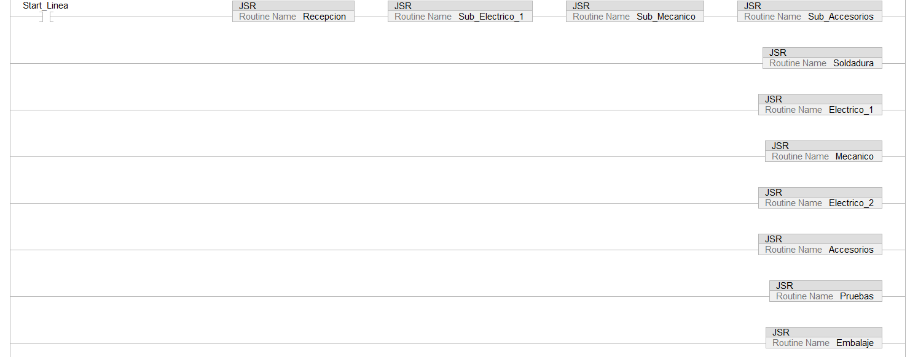

Rutina principal

La rutina principal (MainRoutine) fue estructurada mediante una secuencia ordenada
de llamadas a subrutinas (JSR), con el fin de dividir el proceso completo en etapas
funcionales independientes que reflejan de manera fiel el flujo real de la línea de
ensamblaje. Esta organización modular permite una programación clara, escalable y
fácil de mantener, ya que cada etapa del proceso —desde la recepción hasta el
embalaje— queda encapsulada dentro de su propia subrutina.
La ejecución comienza con una condición de habilitación general (Start_Linea), lo
que permite controlar cuándo se inicia efectivamente la secuencia. A partir de
allí, se invocan secuencialmente las rutinas Recepcion, Sub_Electrico_1,
Sub_Mecanico y Sub_Accesorios, las cuales están pensadas para preparar y
condicionar los subconjuntos antes del proceso principal de integración.
Posteriormente, se ejecutan las etapas operativas del ensamblaje como Soldadura,
Electrico_1, Mecanico, Electrico_2, Accesorios, seguidas por las etapas de
verificación (Pruebas) y cierre del proceso (Embalaje).
Esta estructura fue elegida intencionalmente para facilitar la depuración y pruebas
de cada sección de forma independiente, permitiendo además su reutilización o
modificación sin afectar el resto del sistema. Al evitar una lógica monolítica
dentro de un solo bloque, se mejora la organización general del proyecto, se reduce
la complejidad del programa principal y se facilita la colaboración en entornos de
trabajo en equipo. Aunque en esta etapa inicial todas las subrutinas se ejecutan de
forma condicional al arranque, se ha dejado el diseño preparado para implementar
señales de transición o flags que controlen el paso entre etapas, asegurando así una
ejecución robusta y segura.